01 Lock screen
The smallest screen on your Mac.
LunarNotch turns the black pill above your display into a calendar, a player and a clock. It waits in the notch, follows you to the lock screen, and never opens a window.
- Free
- macOS 26+
- Intel & Apple silicon
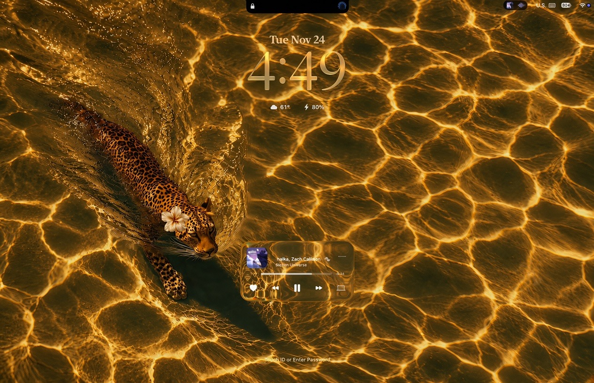
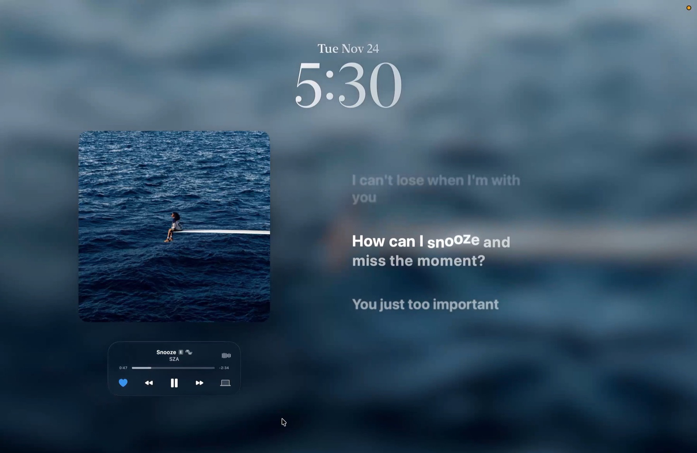
What you see before you sign in. The pill keeps playing, artwork and all.
02 Screens
What fits in the pill.
Swipe sideways inside the notch. It holds the things you would otherwise open a window to check — and folds away the moment you stop.
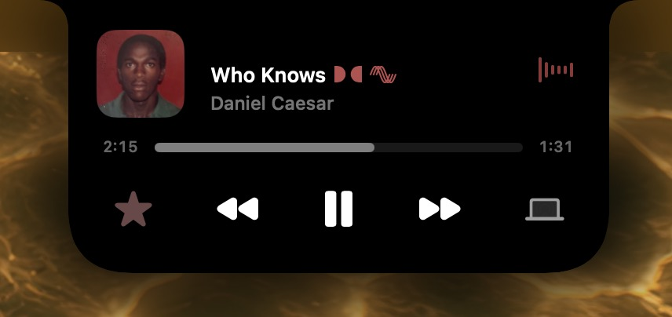
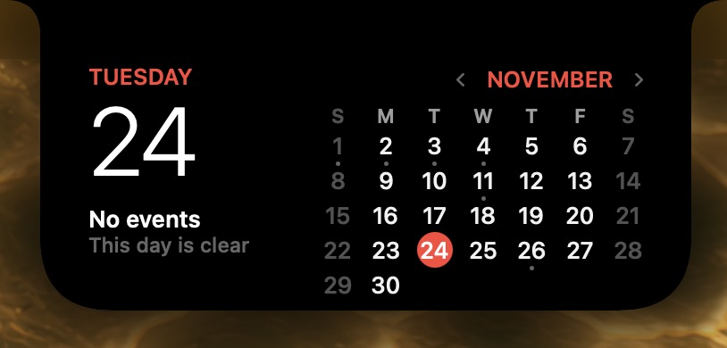
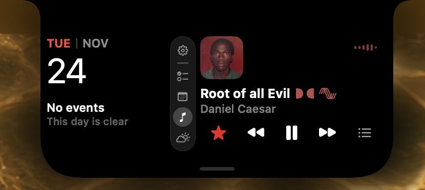
Also in the rail
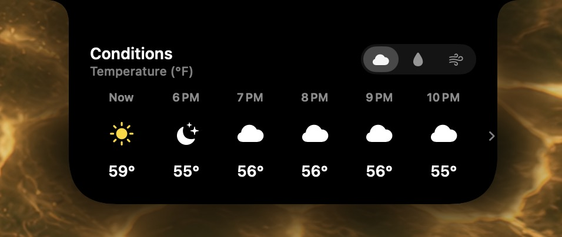
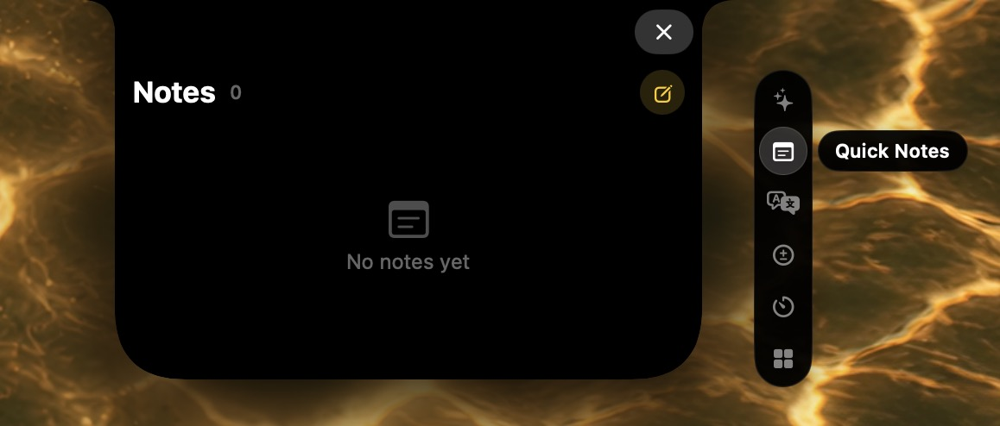
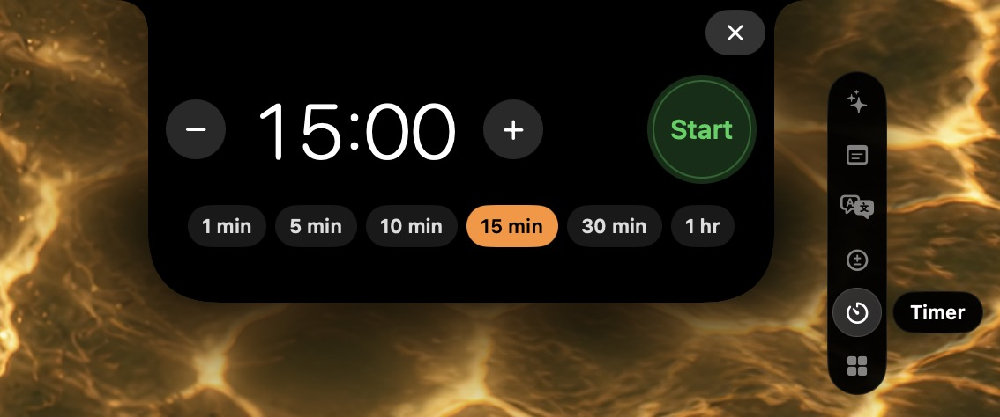
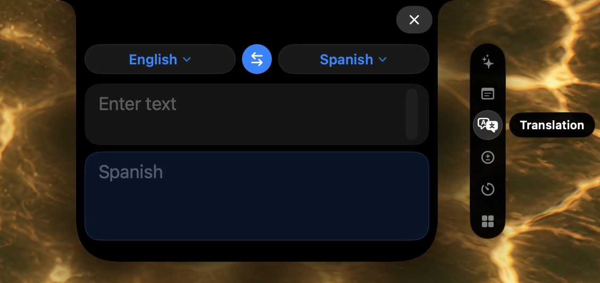
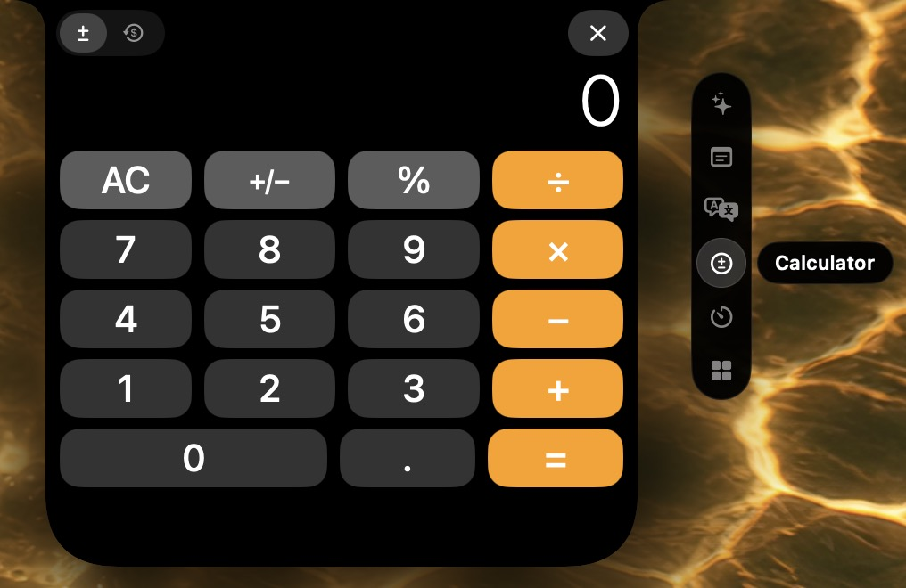
Five of them, and the rail scrolls if you add more.
03 Small print
Everything else, briefly.
Four answers instead of a feature grid.
- Runs on
- Apple silicon and Intel. Any Mac from 2021 onwards, natively.
- Needs
- macOS 26 or later. A notch helps but isn’t required — without one, LunarNotch builds its own island at the top of the screen.
- Costs
- Nothing. No account, no ads, no subscription, no licence to recover.
- Weighs
- Almost nothing. It wakes on a track change or an event, draws one frame, and goes back to sleep.
04 Quiet
Almost nothing.
There is no window to move, no dock icon to find and no menu bar extra to hunt for. LunarNotch lives where the hardware already left a gap, and it leaves the rest of your screen alone.
-
It reads Calendar and Music on your Mac and sends nothing anywhere. No account, no sign-in, no analytics, no phone home on launch.
-
Everything outside the pill is click-through. A click in the corner of the screen still lands on the app behind it, exactly as it would without LunarNotch running.
-
LunarNotch is available on the lock screen, so the track you were playing is still there — artwork, scrubber and controls — one click after Touch ID.
05 Everywhere
Two places, one pill.
The same card over your wallpaper and over the lock screen. Full quality artwork, the real scrubber, nothing else on top of it.
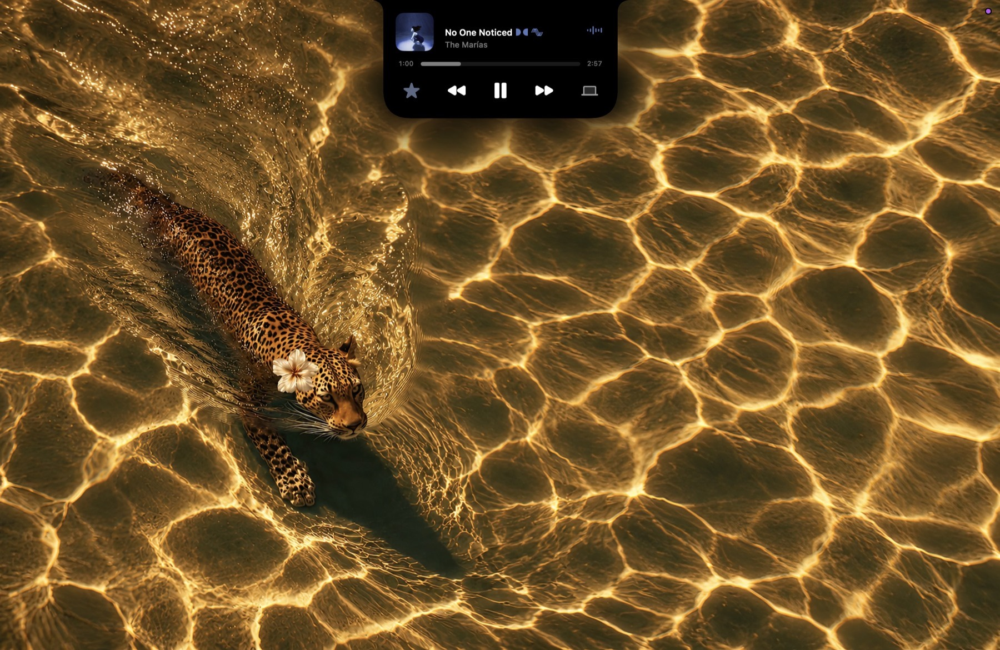
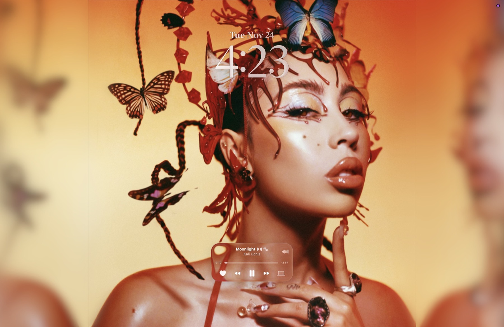
06 Download
Your notch has been waiting.
Free, and yours to keep. No account, no subscription.